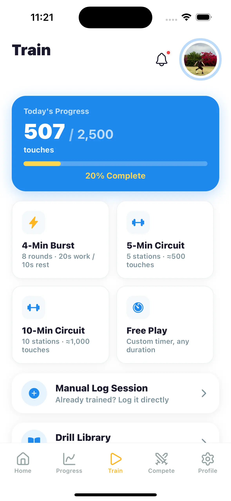

Kids don’t need a field or a coach to improve at soccer. Toe taps, foundations, sole rolls, cone dribbling, wall passing, and juggling all work in a backyard, driveway, or garage — and 10–15 focused minutes a day beats an occasional hour.
What makes a good at-home soccer drill?
Three things: lots of touches, a small space, and a way to tell if you’re improving. The best home drills are dense — hundreds of ball contacts in a few minutes — and they don’t need a goal, a partner, or more room than a parking spot.
The six best soccer drills to do at home
1. Toe taps
Alternate feet tapping the top of the ball. Start slow, build speed. Two minutes is roughly 200 touches and a surprising leg burner. Works on any flat surface, including indoors with a slightly deflated ball.
2. Foundations (bell touches)
Tap the ball side to side between the insides of both feet. This is the single highest-rep drill in soccer and the fastest way to build a comfortable first touch with both feet.
3. Sole rolls and pull-backs
Roll the ball across your body with the sole, stop it, pull it back. This builds the close control players use to escape pressure in real games.
4. Cone dribbling
Five cones (or shoes, or water bottles) in a line, a yard apart. Dribble through with inside touches only, then outside only, then sole only. Time each run and race your own record.
5. Wall passing
Any solid wall becomes a teammate who never misses. Pass with the right, receive with the left, and switch. Aim for a spot on the wall to add accuracy pressure.
6. Juggling
The classic. Start with catch-juggles (one touch, catch, repeat) and build toward unbroken runs. Full progression in our guide to how to juggle a soccer ball.
The problem with drill lists
Every drill list looks great on day one. By week two, kids are bored of the same six drills and practice quietly stops. What keeps home training alive is variety and a reason to show up today — a new challenge, a streak on the line, a teammate to beat.
One fix is a plan that changes every day for you: our free 30-Day Touch Challenge turns these exact drills into a day-by-day program with escalating touch targets.
Get a new drill challenge every day with Master Touch
The Train tab has a drill library with video demos, plus a fresh daily challenge — like “Foot Catches: get as many touches as you can in 3 minutes” — with Beginner, Intermediate, and Advanced tiers. Watch the video, start the timer, log your score. Complete challenges to build a challenge streak alongside your day streak.
Download Free on the App Store
Setting up a home training habit
- Pick a spot and leave the ball there. A ball by the back door gets used; a ball in the garage cabinet doesn’t.
- Keep sessions short. Ten good minutes daily beats a grudging hour on Saturday. See how often kids should practice.
- Count something. Touches, juggles, cone-run time — kids push harder when there’s a number to beat. Most families use a touch tracker and a daily goal like 1,000 touches a day.